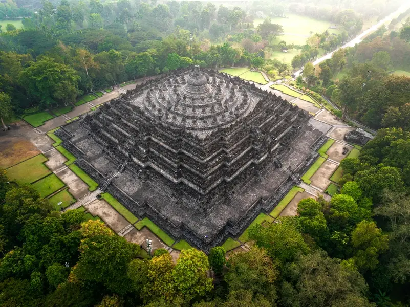
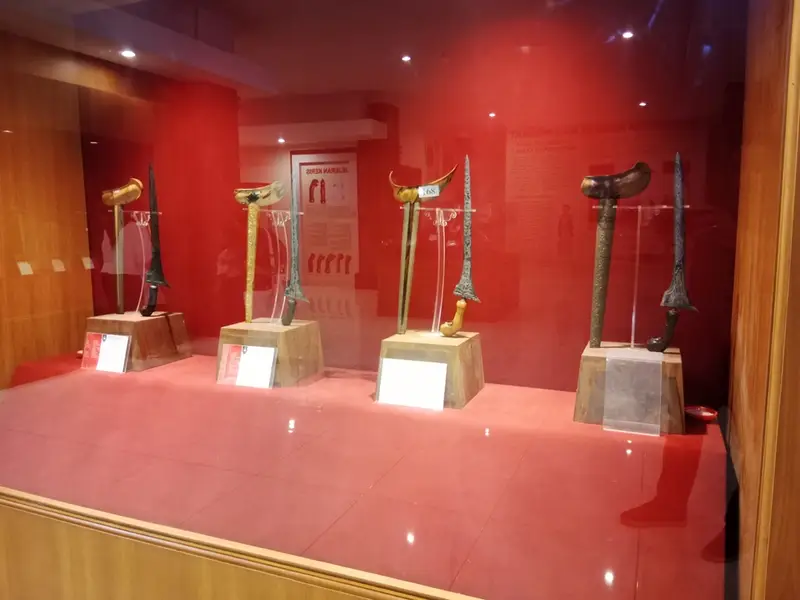
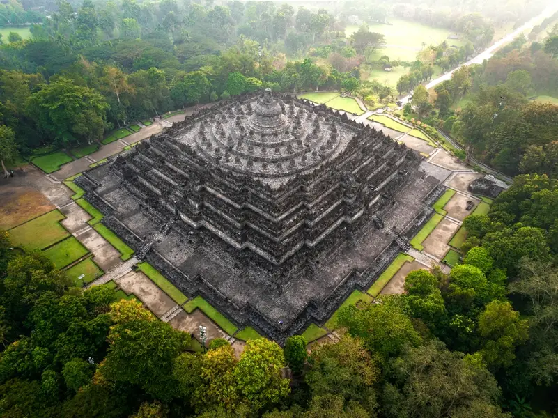
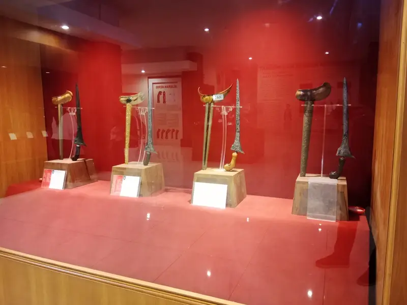
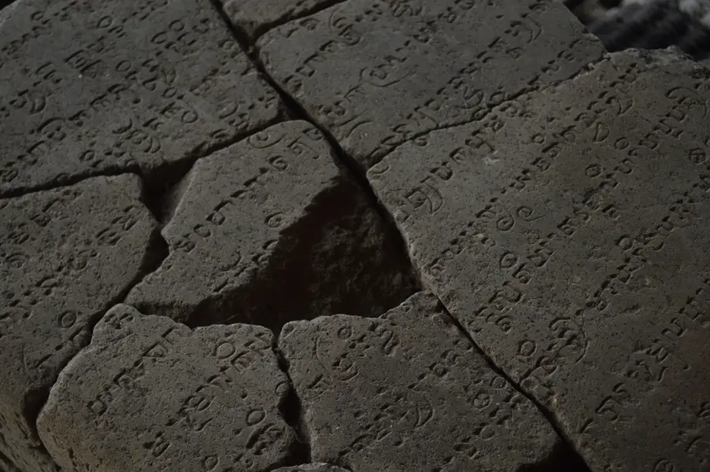
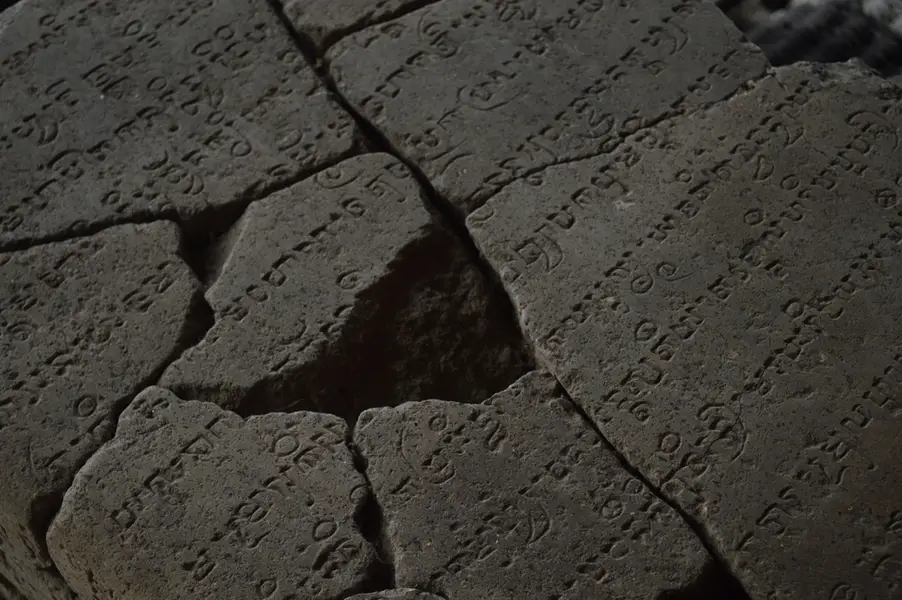

Tari Saman

Tari Saman berasal dari Aceh dan dikenal dengan gerakan serempak.
Menjaga kekayaan budaya bangsa untuk generasi masa depan.
Jelajahi BudayaSitus ini kami buat untuk memperkenalkan dan melestarikan budaya Indonesia.
Melalui platform ini, kami membagikan informasi budaya kepada generasi masa depan.
Tari Saman berasal dari Aceh dan dikenal dengan gerakan serempak.

Tari dari Bali yang terkenal dengan paduan suara khas.

Tarian anggun dari Jawa Barat.

Tari Tortor adalah tarian adat Batak dari Sumatera Utara yang digunakan dalam upacara adat dan diiringi musik gondang.

Tari Piring adalah tarian tradisional Minangkabau dari Sumatera Barat yang menggunakan piring sebagai properti utama dan menampilkan gerakan cepat serta dinamis.

Tari Kipas Pakarena adalah tarian tradisional Gowa, Sulawesi Selatan, dengan gerakan lembut menggunakan kipas.

Masakan khas Minang yang populer di dunia.

Makanan khas Yogyakarta dari nangka muda.

Makanan khas Palembang yang wajib dicoba.

Nasi tiwul adalah makanan tradisional dari Jawa, terutama daerah Gunungkidul, yang dibuat dari gaplek (singkong kering) sebagai pengganti nasi.

Rawon adalah masakan khas Jawa Timur berupa sup daging berkuah hitam yang berasal dari bumbu kluwek.

Nasi liwet adalah makanan tradisional dari Jawa, terutama Solo, yang dimasak dengan santan dan rempah sehingga rasanya gurih dan harum.
Batik adalah seni kain Indonesia yang telah diakui dunia. Batik nusantara adalah cermin dari kekayaan budaya Indonesia yang tak ternilai harganya. Dari teknik pembuatannya yang rumit hingga makna yang terkandung dalam setiap motif, batik merupakan warisan yang terus hidup dan berkembang seiring waktu. Sebagai bagian dari identitas budaya Indonesia, batik bukan hanya simbol kebanggaan, tetapi juga merupakan pintu gerbang bagi dunia untuk mengenal lebih dekat kekayaan seni dan budaya Indonesia. Dengan terus melestarikan batik, kita tidak hanya menghargai sejarah, tetapi juga memperkenalkan keindahannya ke seluruh dunia.

Sejarah kebudayaan Nusantara berkembang sejak masa prasejarah dan diperkaya oleh pengaruh Hindu-Buddha, Islam, dan Eropa, hingga membentuk budaya Indonesia yang beragam. Contoh budaya: Seni: Tari Saman, Wayang Kulit, Tari Piring Arsitektur: Rumah Gadang, Tongkonan, Candi Borobudur Upacara adat: Ngaben, Rambu Solo’, Tabuik Kuliner: Rendang, Pempek, Papeda Penerapan: Pembelajaran budaya di sekolah, gotong royong dan upacara adat, pelestarian lewat pariwisata, promosi digital, serta penggunaan bahasa daerah dan tradisi keluarga.
Teknologi berperan penting dalam menjaga, mendokumentasikan, dan mengenalkan budaya agar tetap lestari dan dikenal generasi berikutnya. Contoh & Penerapannya 1. Digitalisasi Arsip Budaya Contoh: Pemindaian naskah lontar, manuskrip Melayu, foto sejarah. Penerapan: Arsip tersimpan aman dalam bentuk digital, tidak mudah rusak, dan dapat diakses oleh masyarakat serta peneliti secara online. 2. Media Sosial dan Platform Digital Contoh: Upload video tari Saman, kuliner tradisional, atau upacara adat di YouTube/Instagram/TikTok. Penerapan: Budaya lebih mudah dikenal generasi muda dan menjadi sarana promosi pariwisata. 3. Virtual Reality (VR) / Augmented Reality (AR) Contoh: Tur virtual Candi Borobudur atau Museum Nasional. Penerapan: Orang bisa mempelajari dan “mengunjungi” situs budaya tanpa harus datang langsung. 4. Aplikasi Pembelajaran Budaya Contoh: Aplikasi belajar bahasa daerah, aplikasi pengenalan batik atau rumah adat. Penerapan: Pembelajaran budaya menjadi lebih menarik, interaktif, dan mudah diakses. 5. Dokumentasi Seni dan Musik Contoh: Rekaman gamelan, tari tradisional, atau pertunjukan wayang. Penerapan: Seni tradisional terdokumentasi dengan baik untuk dipelajari dan diwariskan. 6. E-commerce untuk Produk Budaya Contoh: Penjualan batik, tenun, ukiran, atau kuliner daerah di marketplace. Penerapan: Membantu pengrajin melestarikan tradisi sekaligus meningkatkan ekonomi budaya.
Budaya Indonesia dikenal dunia karena keberagaman, keunikan, dan nilai historisnya. Banyak budaya Indonesia telah diakui UNESCO dan sering ditampilkan dalam acara internasional, sehingga memperkuat identitas bangsa di mata global. Contoh Budaya Indonesia yang Mendunia Batik (warisan UNESCO, digunakan tokoh dunia) Angklung (warisan UNESCO, dimainkan di konser internasional) Wayang (pertunjukan seni yang terkenal global) Kuliner seperti rendang, sate, dan nasi goreng Tarian seperti Saman dan Pendet Candi Borobudur & Prambanan (warisan dunia) Penerapannya di Tingkat Internasional Diplomasi budaya melalui festival, pameran batik, kuliner, dan pertunjukan seni. Promosi pariwisata seperti “Wonderful Indonesia”. Penjualan produk budaya (batik, tenun, kerajinan) secara global. Pertunjukan seni Indonesia di luar negeri. Program pendidikan dan pertukaran budaya.


 





 
